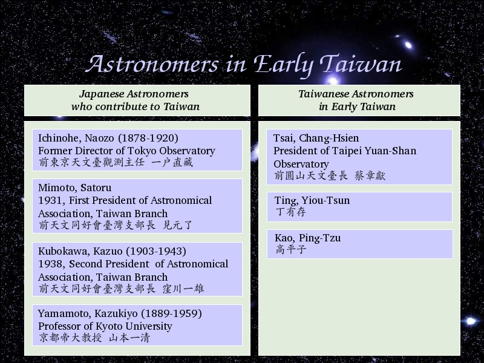

Voice Over:
Let us review few important astronomers in early taiwan.
There are 4 Japanese I found, and 1 Taiwanese I found.
I have no story about Tsai, Chang-Hsien right now, I am going to interview Tsai, Chang-Hsien next year.
So hope I will have new story about him.
In my talk I only meantioned Tsai, Chang-Hsien is the important Astronomer in early Taiwan.
Prof. Yuan, Chi and Prof. Lee, Typhoon kindly inform me that Ting, Yiou-Tsun is also the important Astronomer in early Taiwan.
And Kao, Ping-Tzu is also another important Astronomer in early Taiwan.
About there stories, I will find out next time.